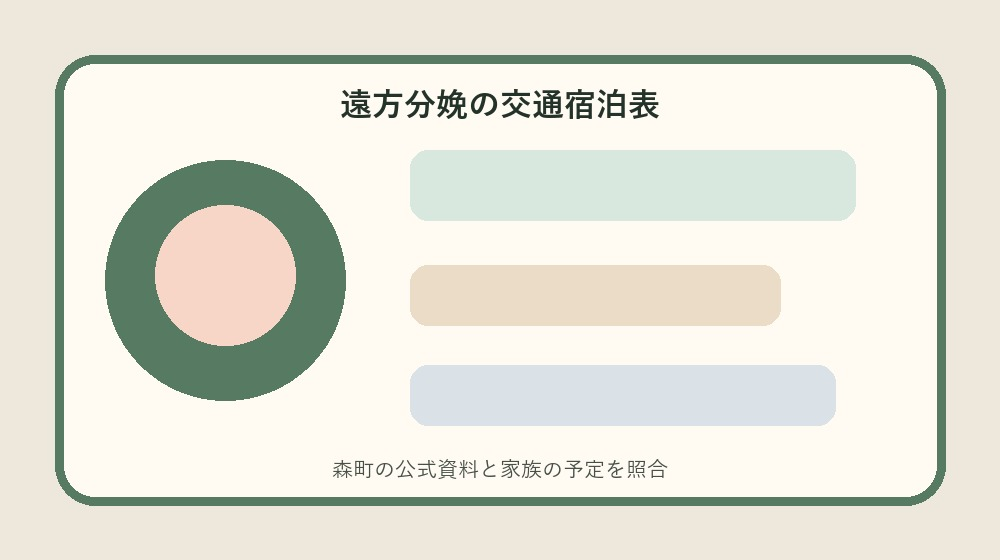
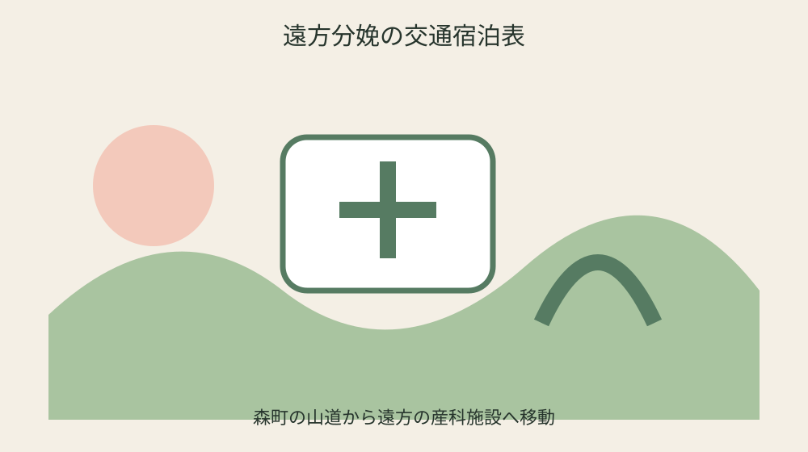
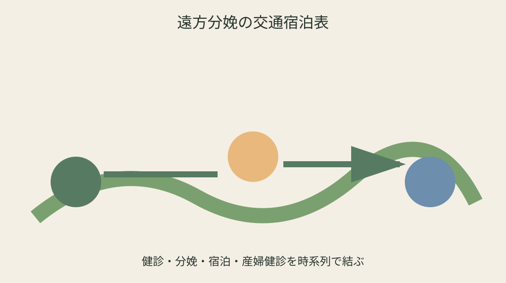

森町の遠方分娩交通費等助成｜60分・14往復・14泊を予定表にする

結論：遠方分娩交通・宿泊予定表へ対象、日付、手元資料、未確認事項を分け、最初の一問だけを森町へ確認します。
自宅と里帰り先を別住所で置く
自宅と里帰り先を別住所で置くでは、森町公式の「妊娠・出産時に森町の住民票が必要」を起点にします。遠方分娩交通・宿泊予定表には日付、対象、手元資料、確認日を別欄で置き、制度名だけを写して終わらせません。妊娠・出産の経過は人ごとに異なるため、共通条件と自分の状況を同じ文章に混ぜず、二列で見比べます。
手元では「自己都合で特定施設を選ぶ場合は対象外」も確認します。通知、母子健康手帳、領収書、受診票の原本は動かさず、写しへ番号を付けます。分からない欄は家族の記憶で埋めず、未確認の理由と次に尋ねる窓口を記すことが、遠方分娩交通・宿泊予定表を安全に使う条件です。
健康こども課へ相談するときは、自宅と里帰り先を別住所で置くについて確認済みの一点と質問したい一点を分けて伝えます。「妊娠後期から遠方施設利用なら7往復まで」が個別にどう当てはまるか、回答日、担当、必要書類、次の期限まで書けば、同じ説明を最初から繰り返さずに済みます。
遠方分娩交通・宿泊予定表の旧版は消しません。「産婦健診交通費は2往復まで」を採用した根拠、変更前の記録、更新日を残します。医療機関の受入条件や年度案内は変わり得るため、予約・支払・申請の直前には現在の公式案内を再確認してください。
最寄り施設までの時間と距離を測る
最寄り施設までの時間と距離を測るでは、森町公式の「住所地または里帰り先から最寄り施設まで概ね60分以上が一条件」を起点にします。遠方分娩交通・宿泊予定表には日付、対象、手元資料、確認日を別欄で置き、制度名だけを写して終わらせません。妊娠・出産の経過は人ごとに異なるため、共通条件と自分の状況を同じ文章に混ぜず、二列で見比べます。
手元では「医学上の理由で周産期母子医療センター利用時にも条件がある」も確認します。通知、母子健康手帳、領収書、受診票の原本は動かさず、写しへ番号を付けます。分からない欄は家族の記憶で埋めず、未確認の理由と次に尋ねる窓口を記すことが、遠方分娩交通・宿泊予定表を安全に使う条件です。
健康こども課へ相談するときは、最寄り施設までの時間と距離を測るについて確認済みの一点と質問したい一点を分けて伝えます。「分娩時交通費も対象」が個別にどう当てはまるか、回答日、担当、必要書類、次の期限まで書けば、同じ説明を最初から繰り返さずに済みます。
遠方分娩交通・宿泊予定表の旧版は消しません。「申請前に健康こども課へ相談」を採用した根拠、変更前の記録、更新日を残します。医療機関の受入条件や年度案内は変わり得るため、予約・支払・申請の直前には現在の公式案内を再確認してください。
自己都合と医学上の理由を分ける
自己都合と医学上の理由を分けるでは、森町公式の「概ね60分は片道30キロ以上を想定」を起点にします。遠方分娩交通・宿泊予定表には日付、対象、手元資料、確認日を別欄で置き、制度名だけを写して終わらせません。妊娠・出産の経過は人ごとに異なるため、共通条件と自分の状況を同じ文章に混ぜず、二列で見比べます。
手元では「妊婦健診交通費は14往復まで」も確認します。通知、母子健康手帳、領収書、受診票の原本は動かさず、写しへ番号を付けます。分からない欄は家族の記憶で埋めず、未確認の理由と次に尋ねる窓口を記すことが、遠方分娩交通・宿泊予定表を安全に使う条件です。
健康こども課へ相談するときは、自己都合と医学上の理由を分けるについて確認済みの一点と質問したい一点を分けて伝えます。「分娩前待機の宿泊費は最大14泊」が個別にどう当てはまるか、回答日、担当、必要書類、次の期限まで書けば、同じ説明を最初から繰り返さずに済みます。
遠方分娩交通・宿泊予定表の旧版は消しません。「領収書・母子手帳・口座資料等が必要」を採用した根拠、変更前の記録、更新日を残します。医療機関の受入条件や年度案内は変わり得るため、予約・支払・申請の直前には現在の公式案内を再確認してください。
妊婦健診14往復を日付で数える
妊婦健診14往復を日付で数えるでは、森町公式の「自己都合で特定施設を選ぶ場合は対象外」を起点にします。遠方分娩交通・宿泊予定表には日付、対象、手元資料、確認日を別欄で置き、制度名だけを写して終わらせません。妊娠・出産の経過は人ごとに異なるため、共通条件と自分の状況を同じ文章に混ぜず、二列で見比べます。
手元では「妊娠後期から遠方施設利用なら7往復まで」も確認します。通知、母子健康手帳、領収書、受診票の原本は動かさず、写しへ番号を付けます。分からない欄は家族の記憶で埋めず、未確認の理由と次に尋ねる窓口を記すことが、遠方分娩交通・宿泊予定表を安全に使う条件です。
健康こども課へ相談するときは、妊婦健診14往復を日付で数えるについて確認済みの一点と質問したい一点を分けて伝えます。「産婦健診交通費は2往復まで」が個別にどう当てはまるか、回答日、担当、必要書類、次の期限まで書けば、同じ説明を最初から繰り返さずに済みます。
遠方分娩交通・宿泊予定表の旧版は消しません。「妊娠・出産時に森町の住民票が必要」を採用した根拠、変更前の記録、更新日を残します。医療機関の受入条件や年度案内は変わり得るため、予約・支払・申請の直前には現在の公式案内を再確認してください。

妊娠後期7往復の該当を確認する
妊娠後期7往復の該当を確認するでは、森町公式の「医学上の理由で周産期母子医療センター利用時にも条件がある」を起点にします。遠方分娩交通・宿泊予定表には日付、対象、手元資料、確認日を別欄で置き、制度名だけを写して終わらせません。妊娠・出産の経過は人ごとに異なるため、共通条件と自分の状況を同じ文章に混ぜず、二列で見比べます。
手元では「分娩時交通費も対象」も確認します。通知、母子健康手帳、領収書、受診票の原本は動かさず、写しへ番号を付けます。分からない欄は家族の記憶で埋めず、未確認の理由と次に尋ねる窓口を記すことが、遠方分娩交通・宿泊予定表を安全に使う条件です。
健康こども課へ相談するときは、妊娠後期7往復の該当を確認するについて確認済みの一点と質問したい一点を分けて伝えます。「申請前に健康こども課へ相談」が個別にどう当てはまるか、回答日、担当、必要書類、次の期限まで書けば、同じ説明を最初から繰り返さずに済みます。
遠方分娩交通・宿泊予定表の旧版は消しません。「住所地または里帰り先から最寄り施設まで概ね60分以上が一条件」を採用した根拠、変更前の記録、更新日を残します。医療機関の受入条件や年度案内は変わり得るため、予約・支払・申請の直前には現在の公式案内を再確認してください。
分娩時の移動手段を決める
分娩時の移動手段を決めるでは、森町公式の「妊婦健診交通費は14往復まで」を起点にします。遠方分娩交通・宿泊予定表には日付、対象、手元資料、確認日を別欄で置き、制度名だけを写して終わらせません。妊娠・出産の経過は人ごとに異なるため、共通条件と自分の状況を同じ文章に混ぜず、二列で見比べます。
手元では「分娩前待機の宿泊費は最大14泊」も確認します。通知、母子健康手帳、領収書、受診票の原本は動かさず、写しへ番号を付けます。分からない欄は家族の記憶で埋めず、未確認の理由と次に尋ねる窓口を記すことが、遠方分娩交通・宿泊予定表を安全に使う条件です。
健康こども課へ相談するときは、分娩時の移動手段を決めるについて確認済みの一点と質問したい一点を分けて伝えます。「領収書・母子手帳・口座資料等が必要」が個別にどう当てはまるか、回答日、担当、必要書類、次の期限まで書けば、同じ説明を最初から繰り返さずに済みます。
遠方分娩交通・宿泊予定表の旧版は消しません。「概ね60分は片道30キロ以上を想定」を採用した根拠、変更前の記録、更新日を残します。医療機関の受入条件や年度案内は変わり得るため、予約・支払・申請の直前には現在の公式案内を再確認してください。
待機宿泊を最大14泊で組む
待機宿泊を最大14泊で組むでは、森町公式の「妊娠後期から遠方施設利用なら7往復まで」を起点にします。遠方分娩交通・宿泊予定表には日付、対象、手元資料、確認日を別欄で置き、制度名だけを写して終わらせません。妊娠・出産の経過は人ごとに異なるため、共通条件と自分の状況を同じ文章に混ぜず、二列で見比べます。
手元では「産婦健診交通費は2往復まで」も確認します。通知、母子健康手帳、領収書、受診票の原本は動かさず、写しへ番号を付けます。分からない欄は家族の記憶で埋めず、未確認の理由と次に尋ねる窓口を記すことが、遠方分娩交通・宿泊予定表を安全に使う条件です。
健康こども課へ相談するときは、待機宿泊を最大14泊で組むについて確認済みの一点と質問したい一点を分けて伝えます。「妊娠・出産時に森町の住民票が必要」が個別にどう当てはまるか、回答日、担当、必要書類、次の期限まで書けば、同じ説明を最初から繰り返さずに済みます。
遠方分娩交通・宿泊予定表の旧版は消しません。「自己都合で特定施設を選ぶ場合は対象外」を採用した根拠、変更前の記録、更新日を残します。医療機関の受入条件や年度案内は変わり得るため、予約・支払・申請の直前には現在の公式案内を再確認してください。
産婦健診2往復を出産後へ残す
産婦健診2往復を出産後へ残すでは、森町公式の「分娩時交通費も対象」を起点にします。遠方分娩交通・宿泊予定表には日付、対象、手元資料、確認日を別欄で置き、制度名だけを写して終わらせません。妊娠・出産の経過は人ごとに異なるため、共通条件と自分の状況を同じ文章に混ぜず、二列で見比べます。
手元では「申請前に健康こども課へ相談」も確認します。通知、母子健康手帳、領収書、受診票の原本は動かさず、写しへ番号を付けます。分からない欄は家族の記憶で埋めず、未確認の理由と次に尋ねる窓口を記すことが、遠方分娩交通・宿泊予定表を安全に使う条件です。
健康こども課へ相談するときは、産婦健診2往復を出産後へ残すについて確認済みの一点と質問したい一点を分けて伝えます。「住所地または里帰り先から最寄り施設まで概ね60分以上が一条件」が個別にどう当てはまるか、回答日、担当、必要書類、次の期限まで書けば、同じ説明を最初から繰り返さずに済みます。
遠方分娩交通・宿泊予定表の旧版は消しません。「医学上の理由で周産期母子医療センター利用時にも条件がある」を採用した根拠、変更前の記録、更新日を残します。医療機関の受入条件や年度案内は変わり得るため、予約・支払・申請の直前には現在の公式案内を再確認してください。

車移動と公共交通の証憑を分ける
車移動と公共交通の証憑を分けるでは、森町公式の「分娩前待機の宿泊費は最大14泊」を起点にします。遠方分娩交通・宿泊予定表には日付、対象、手元資料、確認日を別欄で置き、制度名だけを写して終わらせません。妊娠・出産の経過は人ごとに異なるため、共通条件と自分の状況を同じ文章に混ぜず、二列で見比べます。
手元では「領収書・母子手帳・口座資料等が必要」も確認します。通知、母子健康手帳、領収書、受診票の原本は動かさず、写しへ番号を付けます。分からない欄は家族の記憶で埋めず、未確認の理由と次に尋ねる窓口を記すことが、遠方分娩交通・宿泊予定表を安全に使う条件です。
健康こども課へ相談するときは、車移動と公共交通の証憑を分けるについて確認済みの一点と質問したい一点を分けて伝えます。「概ね60分は片道30キロ以上を想定」が個別にどう当てはまるか、回答日、担当、必要書類、次の期限まで書けば、同じ説明を最初から繰り返さずに済みます。
遠方分娩交通・宿泊予定表の旧版は消しません。「妊婦健診交通費は14往復まで」を採用した根拠、変更前の記録、更新日を残します。医療機関の受入条件や年度案内は変わり得るため、予約・支払・申請の直前には現在の公式案内を再確認してください。
申請前相談の回答を予定表へ反映する
申請前相談の回答を予定表へ反映するでは、森町公式の「産婦健診交通費は2往復まで」を起点にします。遠方分娩交通・宿泊予定表には日付、対象、手元資料、確認日を別欄で置き、制度名だけを写して終わらせません。妊娠・出産の経過は人ごとに異なるため、共通条件と自分の状況を同じ文章に混ぜず、二列で見比べます。
手元では「妊娠・出産時に森町の住民票が必要」も確認します。通知、母子健康手帳、領収書、受診票の原本は動かさず、写しへ番号を付けます。分からない欄は家族の記憶で埋めず、未確認の理由と次に尋ねる窓口を記すことが、遠方分娩交通・宿泊予定表を安全に使う条件です。
健康こども課へ相談するときは、申請前相談の回答を予定表へ反映するについて確認済みの一点と質問したい一点を分けて伝えます。「自己都合で特定施設を選ぶ場合は対象外」が個別にどう当てはまるか、回答日、担当、必要書類、次の期限まで書けば、同じ説明を最初から繰り返さずに済みます。
遠方分娩交通・宿泊予定表の旧版は消しません。「妊娠後期から遠方施設利用なら7往復まで」を採用した根拠、変更前の記録、更新日を残します。医療機関の受入条件や年度案内は変わり得るため、予約・支払・申請の直前には現在の公式案内を再確認してください。
良い点
遠方分娩交通・宿泊予定表で制度条件と個別事情を分けると、次に確認すべき一問が見えます。
住所地または里帰り先から最寄り施設まで概ね60分以上が一条件という具体条件を家族で共有でき、担当が替わっても根拠をたどれます。
遠方分娩の交通宿泊表に期限と原本の場所を集めれば、書類の取り直しを減らせます。
遠方分娩交通・宿泊予定表で未確認を未確認のまま残せることも、安全上の利点です。
注文したい点
遠方分娩の交通宿泊表に関する森町の案内は制度条件が詳しい一方、初めての人には申請順序が読み取りにくい部分があります。
概ね60分は片道30キロ以上を想定に関係する施設や医療機関の条件を同じ画面で比較できると、電話確認がさらに少なくなります。
遠方分娩交通・宿泊予定表で使う年度案内は、更新時に変更箇所と変更日が目立つと旧資料との取り違えを防げます。
遠方分娩の交通宿泊表の現行制度を否定するのではなく、一度で正しい窓口へ届くための改善要望です。
対案・結論
結論は遠方分娩交通・宿泊予定表を今日一枚作り、未確認欄を一つだけ相談することです。
遠方分娩交通・宿泊予定表には公式事実、手元資料、窓口回答、次の期限を四列で置きます。
医学上の理由で周産期母子医療センター利用時にも条件があるを確認しても個別可否は異なるため、遠方分娩の交通宿泊表を使う直前に再確認します。
遠方分娩交通・宿泊予定表の旧版を残し、家族が同じ根拠から続けられる状態を完成とします。
家族に残す記録
遠方分娩の交通宿泊表に使う母子健康手帳や領収書の原本保管場所、確認日、次の予定を家族へ伝えます。
遠方分娩交通・宿泊予定表に医療情報を書く場合は共有相手と範囲を決め、外部提出版に不要な情報を載せません。
遠方分娩の交通宿泊表の連絡先だけでなく、どの条件を何のために尋ねるかも一文で残します。
遠方分娩交通・宿泊予定表では申請控えと入金・利用結果を同じ番号で結びます。
大石の視点
ここまでの遠方分娩の交通宿泊表の制度条件は森町公式資料から確認した事実です。以下は私、大石浩之の実務提案であり、森町の公式見解ではありません。
私は遠方分娩交通・宿泊予定表を紙一枚から始め、原本を動かさず写しへ番号を付ける方法を勧めます。
遠方分娩の交通宿泊表の利用が未定でも、住所、名義、連絡先、期限を整理するだけで家族の負担は軽くなります。
遠方分娩交通・宿泊予定表の未確認欄は失敗ではなく、根拠のない断定を避けるための大切な記録です。
まとめ
遠方分娩交通・宿泊予定表は、すべてを一度で決めるためではなく、次の確認を安全にする表です。
最初は「妊娠・出産時に森町の住民票が必要」と手元資料を照合してください。
遠方分娩の交通宿泊表に不足があれば確認先と期限を残し、予約や支払の前に最新案内を見ます。
遠方分娩交通・宿泊予定表を家族へ渡すときは原本場所と次の担当を添えてください。
よくある質問
遠方分娩交通・宿泊予定表は何から始めますか。
対象、基準日、手元資料を一行にし、「妊娠・出産時に森町の住民票が必要」と照合します。
資料が足りなくても作れますか。
作れます。不足欄を推測で埋めず、必要資料、確認先、期限を記します。
一度確認すれば再確認は不要ですか。
不要ではありません。予約、支払、申請の直前に現行案内を確認します。
家族へ何を渡しますか。
確認済み事実、未確認事項、次の担当、期限、原本保管場所を渡します。
公式情報源
- 遠方の産科医療機関等への交通費等支援（2026年8月26日確認）
- 妊娠・出産（2026年8月26日確認）
最終確認日：2026-08-26